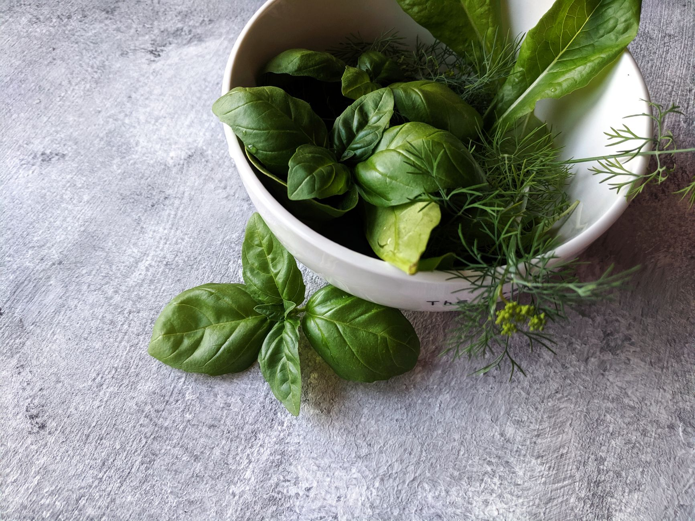

Herb
Tulsi
Known as holy basil, tulsi is grown in many homes and is part of daily tradition and herbal teas.
A gentle guide to the science of life: its elements, its rhythm and the natural ingredients that inspire it.

The word Ayurveda comes from two Sanskrit words: ayus, meaning life, and veda, meaning knowledge. It is a traditional system that looks at wellbeing as a balance between body, mind, spirit and the world around us.
Instead of focusing on one single concern, Ayurveda invites us to notice our daily habits, our food, our sleep, our emotions and the seasons, and to adjust them gently so that life feels more steady and comfortable.
Ayurveda sees everything in nature, and in us, as a mix of five great elements.
Openness and room to grow, like the quiet sky.
Movement and lightness, like a morning breeze.
Warmth and transformation, like a steady flame.
Flow and softness, like a calm river.
Stability and grounding, like an old mountain.
Ayurveda groups the five elements into three energies. Choose one to explore. This is a general idea, not a diagnosis.

Vata is linked with change, creativity and quick thinking. It is described as light, dry, cool and mobile, like the wind.
Pitta is linked with focus, drive and digestion. It is described as hot, sharp and intense, like a bright flame.

Kapha is linked with steadiness, patience and nourishment. It is described as heavy, soft and calm, like the earth.
Ayurveda suggests living in tune with the sun. Here is a simple, flexible flow you can borrow from.
Wake gently, drink warm water, stretch and take a few slow breaths.
A light, warm breakfast and a little movement or yoga to wake up the body.
Make lunch the main meal, eaten calmly and without screens.
A short walk, a lighter dinner and some quiet time with family.
Switch off early, keep the room calm and dark and go to bed on time.
These natural ingredients have long been part of Indian kitchens and home traditions. They are shared here for inspiration, not as medical claims.
Known as holy basil, tulsi is grown in many homes and is part of daily tradition and herbal teas.
The golden root that colours and flavours countless Indian dishes and home recipes.
Indian gooseberry, enjoyed fresh, dried and in traditional preserves across the country.

Plant infused oils are a part of traditional self care routines in many Indian homes.
Gentle movement and stretching to keep the body flexible and the mind steady.
Slow breathing practices that help you pause and feel calm.
A few quiet minutes each day to notice thoughts without hurry.
Unhurried routines with warm oil, clean food and enough rest.
This page is for general education and inspiration only. It is not medical advice and does not diagnose, treat or prevent any condition. Please consult a qualified healthcare professional before changing your diet, routine or lifestyle.
Read about the philosophy behind Navya Ayurveda, or reach out with your questions.